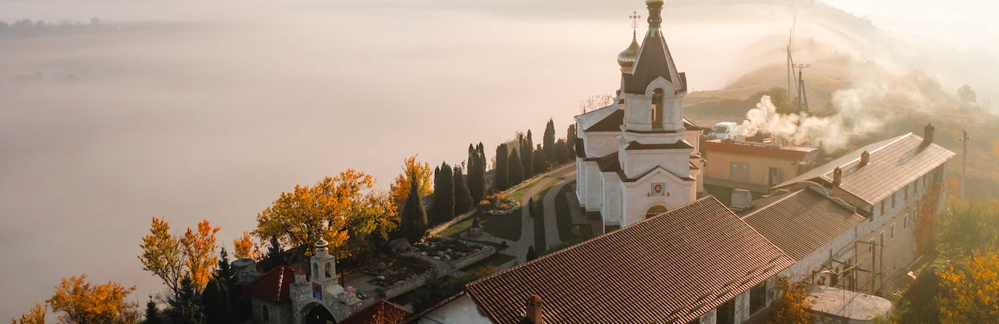
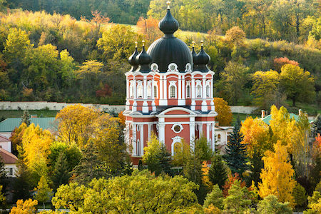
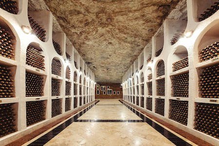
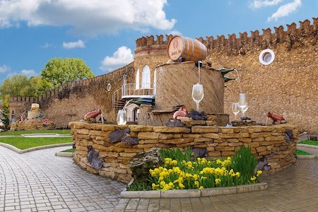
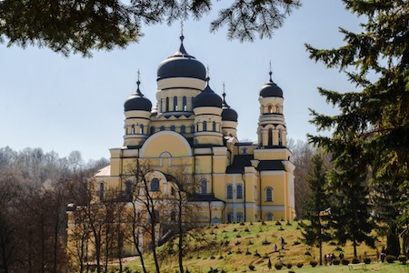
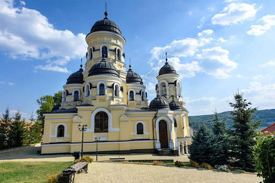
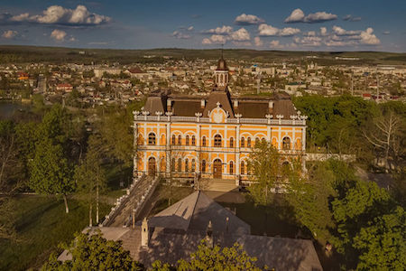
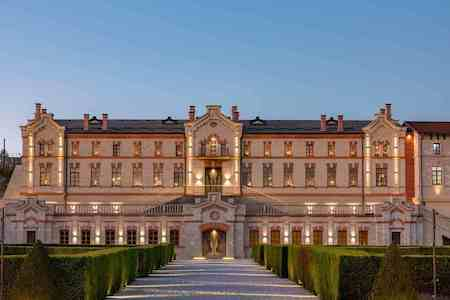
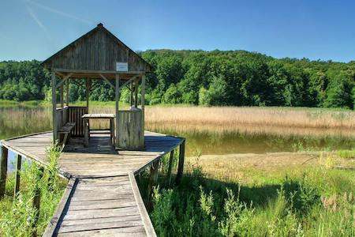
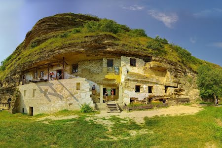

Centrul Moldovei

Centrul Republicii Moldova este o regiune plină de farmec, unde istoria şi natura creează un peisaj de neuitat. Aici se află unele dintre cele mai cunoscute atracţii turistice ale ţării, precum Orheiul Vechi, un loc spectaculos săpat în stâncă. Vizitatorii pot descoperi mănăstiri vechi, precum Mănăstirea Curchi, renumită pentru frumuseţea şi liniştea sa. Regiunea este ideală şi pentru iubitorii de vin, datorită vinăriilor celebre ca Cricova, cu galerii subterane impresionante. Pe lângă atracţiile culturale, centrul oferă şi peisaje naturale deosebite, perfecte pentru relaxare şi explorare. Tradiţiile locale sunt păstrate cu grijă, oferind turiştilor experienţe autentice moldoveneşti. Satele pitoreşti din zonă îţi permit să descoperi ospitalitatea şi obiceiurile locale. Fiecare colţ al regiunii ascunde o poveste, gata să fie descoperită. Centrul Moldovei este locul ideal pentru o escapadă plină de cultură, natură şi tradiţii.
Explorează locaţiile din Centrul Moldovei
Mănăstirea Curchi

Înconjurată de păduri şi linişte, această mănăstire se remarcă prin eleganţa arhitecturii sale. Clădirile restaurate impresionează prin detalii şi armonie. Atmosfera este calmă şi perfectă pentru reculegere. Curtea este îngrijită cu grijă şi plină de flori. Vizitatorii vin aici pentru a se relaxa şi a se deconecta. Locaţia oferă un cadru natural deosebit. Este un loc potrivit pentru plimbări liniştite. Frumuseţea sa o face una dintre cele mai vizitate mănăstiri din Moldova.
Cricova

Sub pământ se ascunde un adevărat oraş al vinului, format din galerii impresionante. Tunelurile se întind pe zeci de kilometri şi creează un labirint fascinant. Vizitatorii pot participa la tururi ghidate bine organizate. Aici sunt păstrate colecţii valoroase de vinuri rare. Atmosfera este unică şi captivantă. Experienţa oferă o incursiune în tradiţia vinificaţiei moldoveneşti. Este un loc apreciat de turişti din întreaga lume. Vizita devine o adevărată aventură subterană.
Mileştii Mici

Aici se află unele dintre cele mai mari beciuri de vin din lume, întinse pe distanţe impresionante. Galeriile subterane creează un spaţiu unic de explorat. Colecţia de vinuri este extrem de bogată şi valoroasă. Vizitatorii pot descoperi tradiţiile vinicole autentice. Degustările oferă o experienţă de neuitat. Atmosfera este plăcută şi primitoare. Locul atrage atât turişti, cât şi pasionaţi de vinuri. Este o destinaţie emblematică pentru Moldova.
Mănăstirea Hâncu

Ascunsă între dealuri şi păduri, această mănăstire oferă un refugiu de linişte. Natura din jur creează un cadru relaxant şi plăcut. Atmosfera este ideală pentru reculegere şi reflecţie. Vizitatorii se pot bucura de aer curat şi linişte deplină. Arhitectura simplă contribuie la farmecul locului. Este o destinaţie potrivită pentru cei care caută pace. Zona înconjurătoare este perfectă pentru plimbări. Locaţia este apreciată pentru frumuseţea sa naturală.
Mănăstirea Căpriana

Ascunsă în inima codrilor, această mănăstire este una dintre cele mai vechi din Moldova. Locul impresionează prin liniştea profundă şi atmosfera sa spirituală. Clădirile au o arhitectură tradiţională, bine păstrată. Natura din jur creează un cadru perfect pentru relaxare. Vizitatorii pot simţi o conexiune aparte cu istoria şi cultura locului. Este un loc ideal pentru reculegere şi reflecţie. Zona este perfectă şi pentru plimbări în aer liber. Mănăstirea atrage turişti prin farmecul său autentic şi liniştitor.
Conacul Manuc Bey

Acest conac impresionant este unul dintre cele mai frumoase monumente istorice din Moldova. Construit în stil arhitectural deosebit, atrage vizitatori prin eleganţa sa. Complexul include mai multe clăiri restaurate cu grijă. Grădinile din jur oferă un spaţiu plăcut pentru plimbări. Vizitatorii pot descoperi istoria fascinantă a locului. Atmosfera combină perfect trecutul cu prezentul. Este un loc ideal pentru fotografii şi relaxare. Conacul reprezintă o destinaţie culturală importantă din centrul Moldovei.
Castelul Mimi

Unul dintre cele mai moderne şi elegante complexe turistice din Moldova, acest castel impresionează prin designul său rafinat. Clădirea combină stilul istoric cu elemente contemporane. Vizitatorii pot descoperi tradiţia vinificaţiei într-un mod interactiv. Curtea şi grădinile sunt amenajate perfect pentru plimbări. Atmosfera este relaxantă şi sofisticată. Este un loc ideal pentru evenimente şi degustări de vin. Priveliştile sunt deosebite în orice sezon. Castelul atrage turişti din întreaga lume.
Rezervaţia Plaiul Fagului

Această rezervaţie naturală este un adevărat colţ de linişte şi frumuseţe în centrul Moldovei. Pădurile dese şi aerul curat creează un cadru perfect pentru relaxare. Zona este bogată în biodiversitate, oferind ocazia de a descoperi specii rare de plante şi animale. Traseele sunt ideale pentru drumeţii şi explorare. Liniştea locului te ajută să te deconectezi complet de agitaţia zilnică. Este o destinaţie perfectă pentru iubitorii de natură. Peisajele sunt spectaculoase în orice anotimp. Rezervaţia oferă o experienţă autentică în mijlocul naturii.
Mănăstirea Ţîpova

Aşezată pe malul Nistrului, această mănăstire impresionează prin poziţia sa spectaculoasă. Stâncile şi peisajele din jur creează un cadru de poveste. Complexul include biserici săpate în piatră. Liniştea locului atrage vizitatori în căutare de relaxare. Este o destinaţie ideală pentru explorare. Priveliştile asupra râului sunt deosebite. Zona este încărcată de istorie şi spiritualitate. Este una dintre cele mai unice locaţii din Moldova.